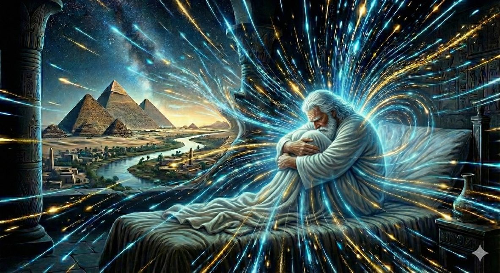
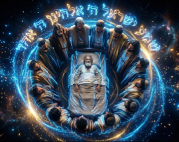
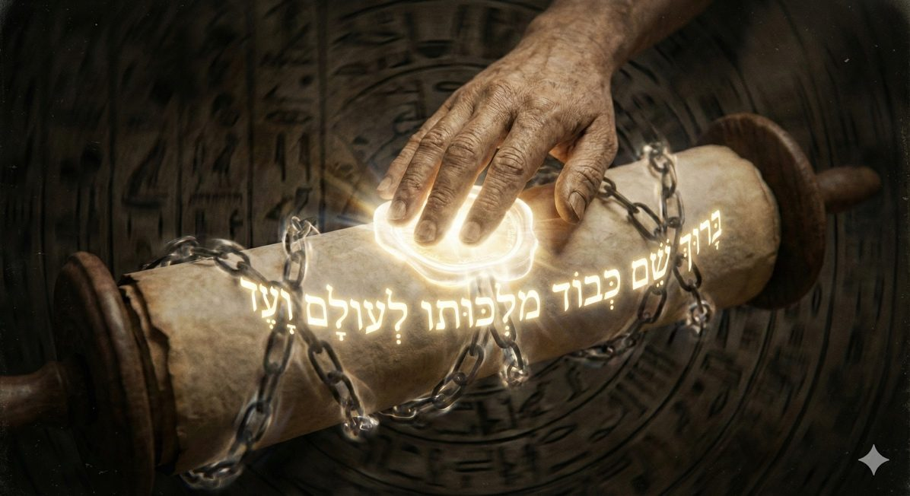
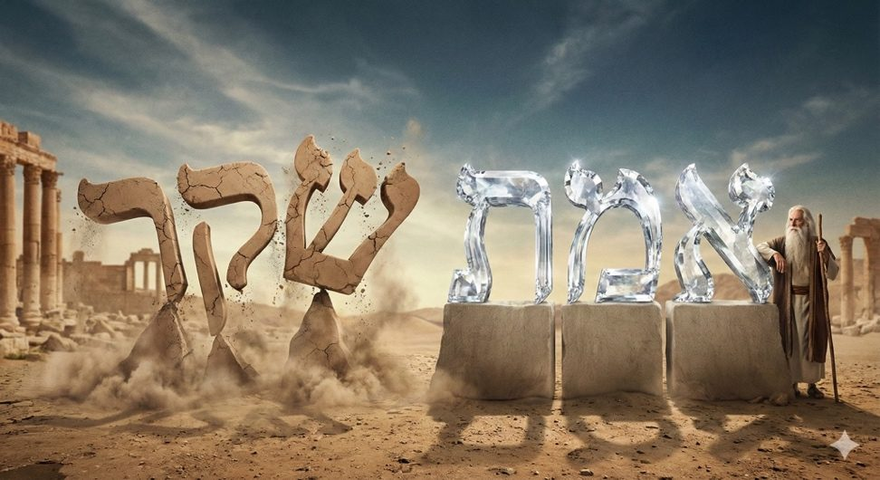
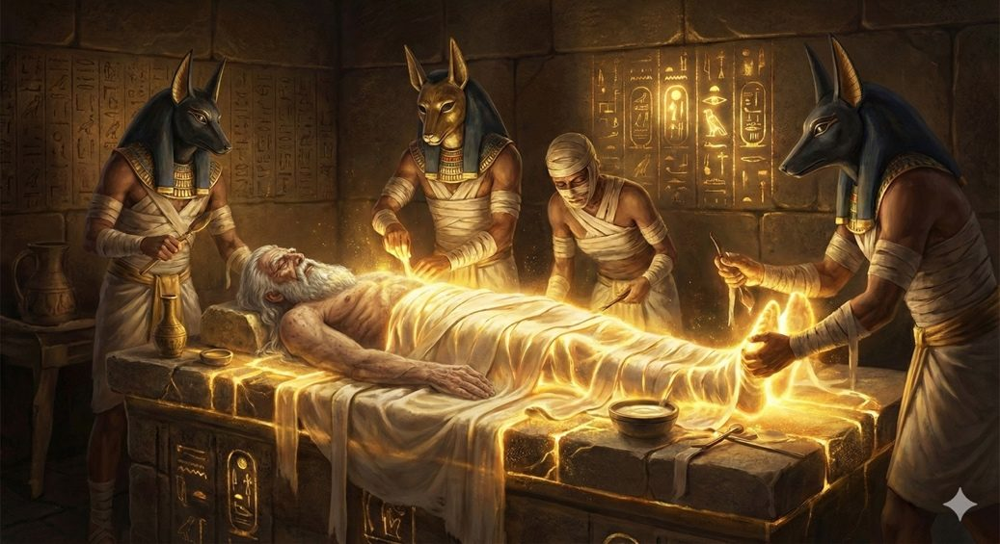
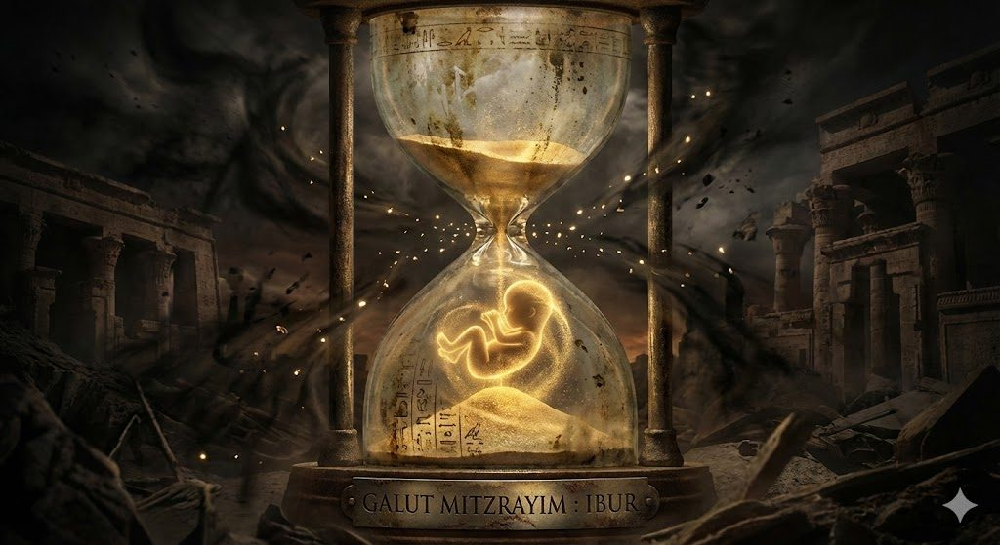

Vayehi 5786
Et il revécut
La Paracha de Vayéhi présente un paradoxe sémantique et existentiel fondamental qui traverse l'ensemble de la mystique juive : la juxtaposition immédiate de la vie et de la mort.
Intitulée « Et il vécut » (Vayéhi), cette section terminale du livre de Berechit (consacré à la création du monde, de la vie, et la formation du peuple d’Israël) est pourtant entièrement consacrée à l'agonie, au testament spirituel et à la disparition du patriarche Yaakov. Cette paracha possède à cet effet une singularité textuelle majeure : elle est, selon la tradition rabbinique scripturaire, Stumah (fermée). Elle débute sans l'espace blanc habituel (l'alinéa) qui sépare les sections de la Torah, traduisant une suffocation du texte. Rachi, citant le Midrash, explique cette anomalie graphique par une causalité historique : « Dès que Yaakov décéda, les yeux et le cœur d'Israël furent fermés par la détresse de l'asservissement ».
Cependant, ce contraste saisissant ne relève pas d'une simple tension littéraire ; il signale une opération métaphysique précise. Comme le soulignent les enseignements hassidiques, notamment dans le Likoutei Torah (Rabbi Schneor Zalman de Liadi), la véritable vie de Yaakov ne se manifeste pleinement qu'au seuil de sa disparition physique. C'est à cet instant précis que l'essence de son être est distillée pour être transmise à sa descendance, opérant un passage de l'existence individuelle à l'existence collective.
Cette humble étude a pour objectif de démontrer avec l‘aide du Ciel et de nos sages que la position fatale de Yaakov, recroquevillé dans son lit, est en réalité une position fœtale. Loin d'être un abandon, c'est une posture active de rassemblement et de transfert d'énergie.
En « rassemblant ses pieds vers le lit » (Vaye’esof), Yaakov ne se contente pas de mourir : il initie le processus de Birour (tri/clarification) qui sous-tendra toute l'histoire de l'exil d'Égypte, agissant tel un fœtus en gestation dans la matrice de l’histoire.

Une Vie après la fin
L'Angoisse de l'Espace Clos
Le Zohar (I, 211b) interroge cette absence d'espace blanc avec une gravité particulière. L'espace blanc dans la Torah représente habituellement le niveau du Keter (la Couronne), le niveau le plus haut du divin qui oxygène la création (voir le chiour sur Vayetsé la vérité en exil où l’on développe la notion du blanc et le personnage de Lavan). Supprimer cet espace revient ainsi à plonger la conscience dans une apnée spirituelle.
Mais, dans la pensée du Sfat Emet (Rabbi Yehudah Aryeh Leib Alter de Gur), cette fermeture ( Stumah) n'est pas une privation, mais une protection. A l’instar de ce que nous avions expliqué au travers de l’exil de Yaakov / la Vérité chez Lavan, une graine doit être hermétiquement enclose dans la terre pour pourrir et germer, la lumière de Yaakov doit être « fermée » aux regards extérieurs pour ne pas être dissipée.
Pour comprendre ce contraste il convient d'abord de situer l'environnement spirituel dans lequel Yaakov opère au moment de sa disparition.
L’Occultation de la fin des temps et le Chema Israel
Le Midrash rapporte une scène d'une intensité dramatique, au seuil de la mort, Yaakov souhaitait révéler à ses fils le Ketz (la Fin des Temps), mais la Présence Divine (la Shehina) s'est retirée de lui, le forçant à se taire sur ce sujet. Il désirait transformer la fin de l'histoire en un aboutissement immédiat mais doit désormais s’interroger sur le retrait de la Shehina.
Est-ce que ce retrait reflète une punition pour avoir voulu dévoiler des secrets divins ? Est-ce une conséquence de la crainte que ses enfants, potentiellement désunis et indignes, ne soient pas au niveau spirituel requis pour recevoir cette lumière ?
Face à ce silence imposé et à l'angoisse du Patriarche qui craint une faille dans la transmission, les douze fils se rassemblent autour du lit. Ils comprennent que le retrait de la Shekhina n'est pas un rejet, mais une invitation à manifester l'unité d'en bas. Ils répondent alors en chœur, d'une seule voix, pour symboliser leur union indéfectible le Chema israel « Écoute Israël, Hachem est notre D., Hachem est UN ».

Rassuré sur l'intégrité de sa lignée, Yaakov répond par une phrase liturgique qui deviendra le secret murmure de la foi juive : « Béni soit le Nom de la gloire de Son règne à jamais et à tout endroit » (Barouch Shem Kevod Malchuto Le'Olam Va'ed).
C'est ici que se joue le mystère de la "Paracha Fermée", Yaakov ne pouvait révéler la Lumière éclatante de la Fin, car l'histoire devait passer par l'épreuve de l'exil, le règne de D. doit apparaitre à tout endroit et à tout moment de l’histoire, même dans l’obscurité égyptienne.
Son "Barouch Shem" est la réponse de la Terre au Ciel. Yaakov accepte d'entrer dans la "fermeture", non comme un mort, mais comme le gardien silencieux de cette Unité, initiant la longue gestation d'Israël à travers les nations.
Il comprend alors que la révélation prématurée de la lumière messianique (le Or HaGanuz voir chiour parachiots vayechev et miketz) dans un monde non rectifié, et particulièrement dans l'impureté de l'Égypte, aurait été catastrophique. La lumière doit désormais être "enfermée" pour être protégée. C'est ici que le paradoxe de Vayehi prend tout son sens : la vie se retire de l'extériorité (la révélation explicite) pour se réfugier dans l'intériorité (le secret, le Sod).

Cette lumière occultée devient alors le moteur de la survie d'Israël en exil. Elle n'est plus visible "au dehors", mais elle brûle "au dedans", dans l'inconscient collectif des tribus. Yaakov, en tant qu’incarnation du Tiferet (L’Harmonie / La Vérité), est le gardien de cette vérité intérieure, il emporte ce secret avec lui.
Son dernier acte est alors de s'assurer que cette vérité ne soit pas altérée, et dissoute dans le Tohu (chaos) égyptien.
Une Vie authentique et éternelle
Dans le Talmud (Ta'anit 5b), il est dit de façon paradoxale :
« Yaakov notre père n'est pas mort ». Quand les sages soulignent que notre paracha mentionne pourtant l’embaumement et l’enterrement, la réponse apportée est : « Tant que sa descendance vit, il vit aussi. »
Pour pénétrer le secret de l'immortalité de Yaakov, affirmée contre toute évidence biologique par le Talmud, il convient de déconstruire la nature même du temps, de la vérité et de l'identité dans la pensée hébraïque.
La Métaphysique du Temps : La « Plénitude des Jours »
L'enseignement du Ari Zal sur la nature chronologique nous offre la clé herméneutique de la supériorité de Yaakov. La Torah énonce : « Les jours d'Israël approchèrent de la mort ». Pourquoi cette formulation plurielle et cumulative ? Pourquoi ne pas dire simplement "Yaakov approcha de la mort" ?
Le Tikoun et la Collecte des Étincelles
Selon la mystique juive, le temps n'est pas une rivière fluide, mais un réservoir d'opportunités discrètes. Adam HaRishon (le premier homme) a fragmenté son âme en une multitude d'étincelles (Nitzotzot) dispersées dans les dimensions du temps et de l'espace. Chaque être humain reçoit un quota de temps spécifique pour récupérer ses propres étincelles.
Ainsi, les « jours » mentionnés dans le verset qui introduit la mort de Yaakov “Les jours d'Israël approchèrent de la mort” font référence aux différentes parties de l’âme qui se rapprochent progressivement de la fin de vie. Yaakov a ressenti l’union de toutes ces parties, annonçant sa mort imminente1.
Et la grandeur de Yaakov se mesure à l'aune de cette récupération, par contraste avec ses prédécesseurs : Si Avraham a laissé échapper des étincelles de sainteté qui ont généré Ishmaël, si Itshak a laissé tomber des étincelles qui ont alimenté la vitalité d'Essav, Yaakov, lui, parvient au crépuscule de son existence avec un « Lit Complet » (Mita Shleima).
Yaakov a opéré un “Vaye'esof” un rassemblement total : il a capturé la totalité des parcelles de temps qui lui étaient allouées. Aucun de ses jours n'a été vain, aucune étincelle n'a été perdue au profit du « Côté Autre » (Sitra Achra). Il a accompli le Birour Shalem (le Tri Parfait), en mourant, il ne laisse aucun « déchet » spirituel, aucune scorie métaphysique, tel est une entité hermétique, totalement réalisée. C'est parce qu'il est absolument plein qu'il ne peut pas disparaître.
Le Mystère du Emet : La Vérité est éternelle
Le prophète Michée cristallise l'essence du patriarche en une formule lapidaire : « Titen Emet LeYaakov » (Tu donneras la Vérité à Yaakov - Michée 7:20). Pour saisir pourquoi Yaakov ne meurt pas, il est tout autant impératif de redéfinir le concept de Vérité.
Dans la pensée occidentale, la vérité est l'adéquation intellectuelle au réel, elle n’existe donc pas car elle dépend de la perception de l’être au réel donnant lieu à la naissance de vérités.
Dans la pensée juive, le Emet (אמת) est une catégorie existentielle : c'est la capacité de durer. A contrario du mensonge (Sheker שקר) qui n'a pas de pieds (ses 3 lettres tiennent sur un pied) le rendant instable et propice à l'effondrement. La Vérité le אמת, est stable, il traverse le temps et les bouleversements sans s'altérer.

Nous verrons avec l’aide du Ciel que le nom de D. revélé par D. à Moché Rabenou lors du passage du buisson ardent (paracha Chemot) comme clé de la délivrance des Bnei Israel en Egypte, est le nom EHIEH אהיה. “je serai qui je serai”, autrement dit je serai avec les bnei israel en egypte pour les délivrer et je serai avec eux également dans le futur pour les délivrer de tous les exils.
Les maîtres nous enseignent que le « Carré » (le Ribo’a) des lettres symbolise le passage d'un point (une idée abstraite) à une surface (une réalité concrète et stable). C’est un processus de déploiement total d’une essence. Nos sages nous font remarquer que le nom de D. EHIEH dont la gematria est égale à 21, mis au carré (comme dans l’expression je serai qui je serai) permet d’attendre la gematria du mot Vérité : 441= אמת = 21 x 21 démontrant encore que la Vérité est ce qui dure et qui tiens débout.
Parce que Yaakov est devenu l'incarnation vivante du Emet, il est impossible qu'il soit annulé par la mort. La mort est une corruption, une fausseté, une négation de l'être. La Vérité pure, par définition, est imputrescible. Ainsi, lorsque le Talmud (Ta'anit 5b) affirme « Yaakov notre père n'est pas mort », il ne file pas une métaphore poétique mais énonce une loi de physique spirituelle : L'être qui atteint la Vérité absolue s'extrait du cycle de la décomposition et devient une constante universelle.
La Dialectique de l'Enterrement et de l'Embaumement
Une objection matérialiste subsiste : si Yaakov est vivant, pourquoi l'embaumer et l'enterrer avec tant de faste ? Le Or Hahaim soulève ici une nuance à la fois terrifiante et magnifique : les Égyptiens croyaient embaumer un cadavre, mais en réalité, ils préservaient un "dormeur". Les Sages enseignent que l'embaumement était techniquement superflu pour Yaakov, car sa chair, purifiée par le travail de ses "Jours", était immunisée contre la décomposition. Cependant, cet acte a eu un effet théurgique : il a permis à la sainteté de Yaakov d'imprégner la matière égyptienne de l'intérieur, sanctifiant l'exil à venir.

L'enterrement final à la Grotte de Makhpéla (situé à Hevron) confirme ce statut supra-humain. Hevron signifie "Connexion" (Hibur). Yaakov est le trait d'union final, en rejoignant Avraham et Isaac, il verrouille la structure des Patriarches, parachevant l’installation du divin sur terre.
Yaakov est mort aux yeux de l'histoire profane (celle de l'Égypte qui voit un cortège funèbre), mais il démeure comme une force vitale souterraine et invisible qui maintient la verticalité de l'histoire sacrée. Car la mort de Yaakov n’est pas une disparition, mais un transfert d’essence : son âme ne quitte pas simplement le monde, elle s’incarne dans le corps collectif d’Israël.
Contrairement aux patriarches dont la mission consistait à fonder, celle de Yaakov est de durer. Sa « mort » marque le moment où il devient l’archétype éternel d’Israël ; son rassemblement sur le lit symbolise la force intérieure nécessaire pour traverser l’histoire sans dispersion.
Une Vie accomplie
Avant de mourir, Yaakov convoque Yossef et utilise une formule spécifique pour le faire jurer de ramener son corps en terre de Canaan dans le caveau de ses ancêtres, qui semble relever de la politesse, mais qui est en réalité un code opératif : « Si j'ai trouvé grâce (Hen) à/dans tes yeux...».
Nous avons à nombreuses reprises expliqué que dans la mystique juive, le Hen (חן) n'est jamais une simple esthétique, mais surtout un mécanisme de canalisation des flux divins des étincelles divines enfouies dans la matière, dans l’obscurité de ce monde.
L'Analyse Combinatoire : Het et Nun
Le mot Hen est composé de deux lettres : Het (ח) : Valeur numérique 8. Le chiffre 8 symbolise ce qui dépasse l'ordre naturel (le 7 jours de la création). C'est la dimension du surnaturel, de la transcendance (Binah). Et Nun (נ) : Valeur numérique 50 renvoie aux Sha'arei Binah (les 50 Portes de l'Intelligence/Compréhension) qui s’infiltrent dans l’ordre naturel.
En invoquant le Hen, Yaakov connecte la dimension supra-naturelle (8) aux portes de l'intelligence qui permettent de naviguer dans l'obscurité (50). Il ne demande pas une faveur sentimentale à Yossef, il établit un circuit énergétique pour extraire son corps de l’Egypte vers la terre de Canaan.
Extraire les lumières perdues
Un autre niveau d'analyse, cher aux maîtres hassidiques, identifie le mot Hen comme l'acronyme de Hokhma Nistarah (חכמה נסתרה), soit la « Sagesse Cachée ». Cette équivalence suggère que la véritable grâce n'est pas une qualité esthétique extérieure, mais la perception de la structure ésotérique de la création. Trouver le Hen, c'est accéder à la connaissance des mécanismes par lesquels le divin anime la matière.
 |
Le processus de Birur Nitzotzot exige cette sagesse. Sans la Hokhma Nistarah, l'individu ne voit que l'écorce (Klipah), le physique, le temporel, le grossier dans ce monde. Avec le Hen, il perce l'opacité du monde pour identifier le point de sagesse divine qui maintient l'objet en existence et qui relie chaque objet avec les autres. C'est pourquoi l’avenant messianique est associé au concept de Hen, car il incarne la Torah de la Sagesse Cachée qui achèvera le raffinement de la création. En demandant à Yossef de le voir avec Hen, Yaakov lui demande de percevoir la réalité métaphysique de son père au-delà du cadavre qui va bientôt gésir devant lui. Il lui demande de voir la "Lumière de Vie" qui persiste et qui doit être rapatriée en Terre d'Israël (Eretz HaKodesh). |
|---|
Les étincelles et la gestion du fœtus
Pour saisir l'ampleur de cet événement, il nous faut revenir à l'axiome fondamental du Ari Zal : le monde qui nous préexiste est un monde brisé. Lors de la Création, la Brisure des Réceptacles de la lumière divine (Shevirat HaKelim) a entrainé une dispersion de la Lumière Divine, trop intense pour ses réceptacles. Les fragments ont chuté dans les mondes inférieurs, emprisonnant avec eux 288 grandes étincelles (Rafah רפ״ח), sources exclusives de toute vitalité matérielle. Dès lors, la vocation d'Israël, et de l'homme en général, est le Birour : l'extraction patiente de ces parcelles de lumière des écorces (Klipot) pour les restituer à leur Source.
C'est ici que la mort de Yaakov prend sa dimension cosmique, elle n'est pas une clôture, mais une inauguration. La tradition mystique nous enseigne que la gestation spirituelle d'un être nécessite 288 jours (environ 9 mois), chaque jour correspondant à la rectification d'une étincelle pour former l'embryon, la gematria du mot Ibour עיבור est d’ailleurs égale à 288.
 |
En « rassemblant ses pieds », Yaakov ne fait pas que quitter le monde : il sème son essence dans la « Matrice de l’Égypte », et devient l’embryon de la Geoula2. L'Exil (Galut Mitzrayim) est alors un immense Ibur (Gestation) : Israël est le fœtus, l'Égypte est le ventre étroit et constricteur, et l'Histoire est le processus de développement visant à extraire, une à une, les étincelles de l'impureté égyptienne. |
|---|
Ainsi, Yaakov « vécut » (Vayehi) dans la mort car il entre dans cette existence latente et gestative. Il devient le principe actif qui, depuis les profondeurs de l'exil, dirige l'opération de sauvetage de la lumière. Dès lors, l'action humaine assume sa fonction. Le but n'est pas de fuir le monde matériel, mais de s'y engager avec une telle intensité spirituelle, avec ce fameux Hen, que la matière elle-même finit par chanter la gloire de D..
C'est le sens profond du "travail des mains" imposé à l’homme suit à la faute d’Adam et Hava mais qui était bien prévu dans le plan divin.
"Manger le fruit de son travail", c’est l’objectif assigné par D. à l’homme depuis la nuit des temps, c'est goûter à la lumière que l'on a soi-même libérée de l’obscurité, celle que souhaitait dévoiler Yaakov à ses enfants avant de se raviser (car alors le libre choix aurait disparu et cela n’aurait pas été leur travail), c’est ce que les enfants crient à leur père Israël en recitant le shema Israël comme démonstration que l’homme reconnait enfin son créateur, son D.
C'est dans cette perspective que résonne la promesse du Roi David dans ses psaumes, assurant que le bonheur véritable réside dans cette transformation du monde, où le profane devient le sanctuaire du sacré :
« Tu mangeras le fruit du travail de tes mains, tu seras heureux et tu auras le bien. »
(Psaume 128 : 2)
Yehi Ratson, que telle soit la volonté divine,
Que nous soyons capables de déceler ce Hen, cette grâce divine cachée, même au cœur de nos exils personnels.
Que nous puissions, à l'image de Yaakov, rassembler toutes les étincelles de nos journées pour transformer l'obscurité en une "Vérité" éclatante, et voir de nos propres yeux la promesse de la Géoula se réaliser, promptement et de nos jours. Amen.
| Chabbat Chalom ! |
|---|
Synthèse
Le Paradoxe Sémantique et la Fermeture Protectrice
Cette humble étude s’ouvre sur une tension fondamentale : la Paracha Vayéhi (« Et il vécut ») relate paradoxalement l’agonie et la disparition de notre patriarche Yaakov. Pourtant, cette contradiction apparente dissimule une opération métaphysique précise. La Paracha est qualifiée de Stumah (fermée), privée de l’espace blanc habituel qui oxygène le texte. Loin d’être une simple suffocation spirituelle due à l’esclavage imminent, cette fermeture, éclairée par le Sfat Emet, doit se lire comme une incubation. À l’instar d’une graine qui doit être hermétiquement enclose dans la terre pour germer, la lumière de Yaakov doit être soustraite aux regards extérieurs pour ne pas être dissipée. En « rassemblant ses pieds vers le lit » (Vaye’esof), Yaakov ne meurt pas : il se concentre. Il passe d’une existence individuelle révélée à une présence collective souterraine, initiant la gestation d’Israël dans la matrice de l’histoire.
L’Occultation de la Fin et le Secret de l’Unité
Au seuil du départ, une scène dramatique se joue : Yaakov souhaite dévoiler le Ketz (la Fin des Temps), mais la Shehina se retire, lui imposant le silence. Ce retrait n'est pas un rejet, mais une invitation à l'unité d'en bas. Face à l'angoisse du père, les enfants répondent par le Chema Israël, scellant l'union des cœurs. Yaakov comprend alors que la lumière messianique (Or HaGanuz) est trop intense pour un monde non rectifié ; elle doit être protégée dans le secret (Sod). Il murmure la réponse au Chema, acceptant que la Vérité ne brille plus « au dehors », mais brûle désormais « au dedans », dans l'inconscient collectif des tribus pour traverser la nuit de l'exil.
La Physique Spirituelle de l’Éternité du Emet
C'est ici que nous touchons au cœur du mystère : « Yaakov notre père n'est pas mort ». Cette affirmation talmudique défie la biologie car elle relève de l'ontologie. Yaakov incarne le Emet (la Vérité), et la Vérité est, par définition, ce qui traverse le temps sans s'altérer. Nous avons relaté, que le Nom divin de la promesse, EHIEH (valeur 21), lorsqu'il est mis au carré pour se concrétiser dans la matière (21×21), donne exactement 441, la valeur de EMET. Yaakov a accompli sa mission sans laisser de « déchets » spirituels ; il est une entité pleine (Mita Shleima). Il est donc imputrescible. Son embaumement et son enterrement ne sont pas des preuves de mortalité, mais des actes théurgiques permettant à sa sainteté d'imprégner la matière égyptienne de l'intérieur.
Le Code du « Hen » et le Labeur du Birour
Enfin, pour survivre à cette occultation, Yaakov transmet à Yossef un code opératif : trouver grâce (Hen) à ses yeux. Le Hen n'est pas esthétique, c'est l'acronyme de Hokhma Nistarah (Sagesse Cachée). C'est la capacité de percevoir, au-delà de l'écorce grossière de l'Égypte, les étincelles divines (Nitzotzot) qui attendent d'être libérées. L'exil devient alors un vaste chantier de Birour (tri). Notre mission n'est pas de subir l'histoire, mais d'extraire les parcelles de lumière capturées lors de la brisure des réceptacles de la lumière divine.
Yaakov, tel un embryon saint, vit à travers nous chaque fois que nous transformons le profane en sacré.
 Pour aller plus loin
Pour aller plus loin
Dans l'immense corpus de la mystique juive, la prière du Chema Israël (« Écoute, Israël ») n'est pas simplement une confession de foi monothéiste ou une obligation liturgique statutaire à laquelle sont soumis les hommes deux fois par jour.
Au prisme de la mystique juive, et plus spécifiquement à travers les lunettes de la théosophie du Arizal et les exégèses du Zohar, le Chema se révèle être un mécanisme, conçu pour opérer la Remontée des Nitzotzot (l'élévation des étincelles de sainteté). Cette opération n'est rien de moins qu'un acte de réparation cosmique (Tikkoun), où l'homme, par la puissance de son intention (Kavanah), devient un partenaire actif de la Divinité pour restaurer les fractures de l'existence. L'enjeu est colossal : il ne s'agit pas seulement de prier, mais de réorganiser la structure métaphysique du monde.
Comme le soulignent les textes, l'exil d'Israël et la dispersion des étincelles sont deux faces d'une même réalité. La récitation du Chema devient alors l'antidote à l'exil, un rassemblement quotidien des fragments épars de la conscience divine, une opération de sauvetage menée au cœur de la réalité matérielle.
Le texte du Chema dans le sefer torah, met en évidence deux lettres agrandies : le Ayin (ע) de Shema et le Dalet (ד) de Echad, ensemble, elles forment le mot Ed (Témoin). Le Zohar explique que le Ayin(valeur 70) représente les 70 noms de la Divinité ou les 70 nations parmi lesquelles les étincelles sont dispersées. Le Dalet (valeur 4) représente la Malkhout dispersée aux quatre vents. La recitation du Chema est donc un témoignage actif : l'homme témoigne que malgré la dispersion apparente (le 70 et le 4), tout remonte à l'Unité, c'est l'acte de transformer la diversité chaotique en une monarchie divine unifiée.
On comprend dés lors différement la recitation du chema israel des enfants de Yaakov lorsque celui-ci ne peut leur rélever la fin des temps, ceux-ci acceptent que le birour des étincelles n’est pas terminé, et qu’ils doivent se plonger dans l’exil egyptien.
Selon Manitou, chaque Juif qui récite le Chema aujourd'hui rejoue cette scène primitive : il s'adresse à son ancêtre Israël (Yaakov) pour témoigner qu'il n'a pas rompu la chaîne, et il rassemble les fragments de sa propre vie dispersée pour les unifier dans le Ehad, l’unité divine.
 Si on doit essayer de ne retenir qu’un point de comportement de cette étude :
Si on doit essayer de ne retenir qu’un point de comportement de cette étude :
Chercher le "Hen" (la Grâce) chez l'autre. Tout comme Yaakov a demandé à Yossef de trouver grâce à ses yeux pour voir au-delà du malade mourant, efforçons-nous cette semaine de ne pas nous arrêter à l'apparence extérieure (l'écorce) des personnes ou des événements contrariants. Cherchons le "Noun" et le "Hét" (la Sagesse Cachée) en eux : quelle est l'étincelle divine qui anime cette personne ? Quelle est la leçon cachée dans cette difficulté ? Exercer ce regard, c'est commencer le travail de Birour (tri) qui amène la délivrance.
Le Paradoxe sémantique (L'Introduction)Constat : La Paracha s'appelle "Il vécut" mais raconte la mort. Anomalie textuelle : La Paracha Stumah (fermée, sans alinéa). Thèse : Ce n'est pas une fin, mais une concentration d'énergie pour la suite (Passage de l'individu au collectif). La Métaphysique de la Fermeture (Le sens du "Fermé")Niveau Pchatique (Rachi) : Angoisse de l'esclavage à venir. Niveau Mystique (Zohar/Sfat Emet) : Absence du Keter (espace blanc) La fermeture comme incubation nécessaire (la graine dans la terre). L'événement dramatique :La tentative ratée de révéler la Fin des Temps L'acceptation du secret (Sod). L'Éternité : Yaakov ne meurt pasPreuve Talmudique : "Tant que sa descendance est vivante, il est vivant." Preuve par le Temps (Ari Zal) :Le temps comme collecte d'étincelles. Yaakov a tout ramassé (Mita Shleima), il est "plein", donc indissoluble. Preuve par la Vérité (Emet) :Vérité vs Mensonge. Le calcul : La vérité est ce qui dure. L'Action dans la Matière : Embaumement et HenEmbaumement : Acte théurgique pour imprégner l'Égypte de sainteté. Le Code "Hen" (Grâce) :Demande faite à Yossef. Combinatoire = Surnaturel + Intelligence traversant la nature. Acronyme : Hokhma Nistarah (Sagesse cachée) Capacité à voir les étincelles divines dans la matière brute. Synthèse : La Gestation CosmiqueLe chiffre 288 : Nombre d'étincelles (Rafah) = Gematria de Ibur (Gestation) = Temps de grossesse. Conclusion :
|
📚 Sources Torah & TanakhRachi sur Genèse 47,28, citant Berechit Rabbah 96,1. Michée 7,20. Hayyim ben Attar, Or HaHaïm sur Genèse 50. MidrashBerechit Rabbah 98,2. TalmudTalmud de Babylone, Ta‘anit 5b. Zohar et Ari ZalZohar, I, 211b. Isaac Louria, enseignements transmis par Hayyim Vital, Etz HaHaïm. Voir Isaac Louria, Sha‘ar HaGilgoulim. HassidoutYehudah Aryeh Leib Alter, Sfat Emet, Vayéhi Likouté Torah |
|---|
 Plan du Chiour
Plan du ChiourS. Mandé, le 8 Tevet rédigé par B.A. Toute réflexion peut être adressée avec joie sur le mail. Les chiourims se trouvent sur les liens : |
 |
|---|
Sur le nombre de jours : Les premières générations (comme Adam) possédaient des âmes contenant plus de 300 000 parties, ce qui expliquait leur grande longévité. Au fil du temps, D. a réduit la quantité de parties de l’âme pour rendre le travail spirituel plus accessible aux générations suivantes. Désormais, une vie de 70 ans représente environ 25 000 jours ou fragments d’âme.↩︎
Il est intéressant de noter que l’embaumement de Yaakov dura 40 jours, le temps de formation d’un embryon dans le ventre de sa mère↩︎